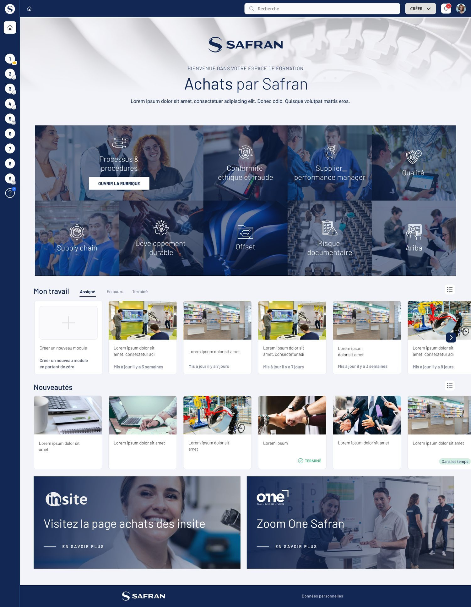

Structurer et personnaliser l'interface de la plateforme SaaS 360Learning pour différentes directions métiers de Safran, en surmontant de fortes contraintes techniques d'intégration et en garantissant la scalabilité du modèle.
Safran
Product Designer Senior
(UX, UI, Design System)
SaaS B2B / LMS interne
Directions Achats, Offset, Selia
Déployer des espaces de formation dédiés et visuellement distincts pour plusieurs pôles stratégiques du groupe, notamment les directions Achats, Offset et Selia.
Le déploiement s'appuyait sur 360Learning, un outil SaaS présentant des restrictions majeures en matière de personnalisation (environnement HTML/CSS fortement bridé, imposant sa propre structure de page).
L'interface native par défaut imposait une navigation linéaire par listes de modules infinies. L'absence de hiérarchie visuelle et de repères métiers alourdissait la charge cognitive, rendant la découvrabilité des contenus critiques très faible pour les collaborateurs.
Pour contourner la rigidité du SaaS sans générer de développements spécifiques impossibles à maintenir, l'approche s'est concentrée sur la refonte du point d'entrée utilisateur.
Réalisation d'ateliers techniques pour identifier les zones de la plateforme (champs textes, bannières) acceptant l'injection de code et d'assets visuels sans altérer le cœur du produit.
Abandon de la navigation standard par listes au profit d'un système de tuiles de catégories interactives.
Création de Hero Banners immersives spécifiques à chaque métier. L'objectif était de structurer visuellement l'offre de formation (ex : Supply chain, Qualité, Développement durable) pour guider l'utilisateur de manière intuitive dès la première seconde.

La stratégie visait à fournir un écosystème pérenne et déployable à l'échelle, plutôt qu'une simple surcouche esthétique jetable.
Conception d'un ensemble de gabarits modulaires (fonds d'écran, grilles de tuiles, structures typographiques) pensés spécifiquement pour s'intégrer dans les contraintes d'injection de la plateforme 360Learning.
Le système a été pensé pour absorber les différentes identités et nomenclatures des directions métiers de Safran, tout en conservant une cohérence ergonomique stricte d'un portail à l'autre.
La bibliothèque de composants a été conçue pour que les administrateurs assemblent un nouveau portail métier sans développement spécifique. Le système modulaire donne aux équipes la liberté de composer leurs pages dans un cadre cohérent.
L'architecture par tuiles réduit la profondeur de navigation : les parcours critiques sont accessibles directement depuis l'accueil, là où l'ancienne version imposait de nombreux défilements.
Le modèle standardisé a été repris par trois directions du groupe (Achats, Offset, Selia).